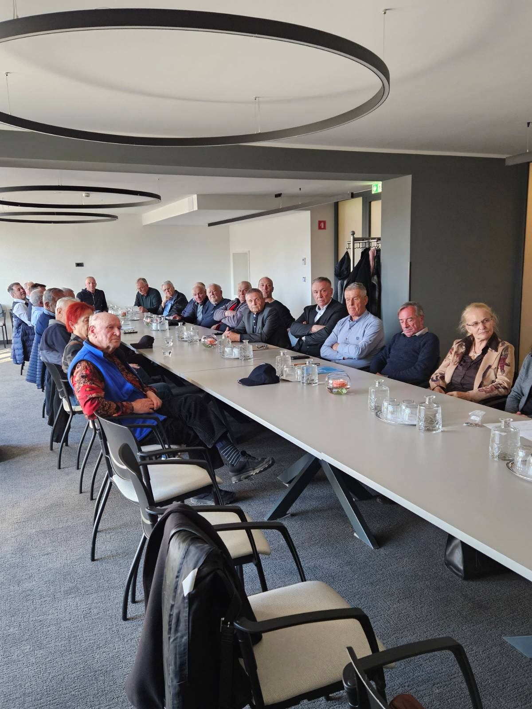
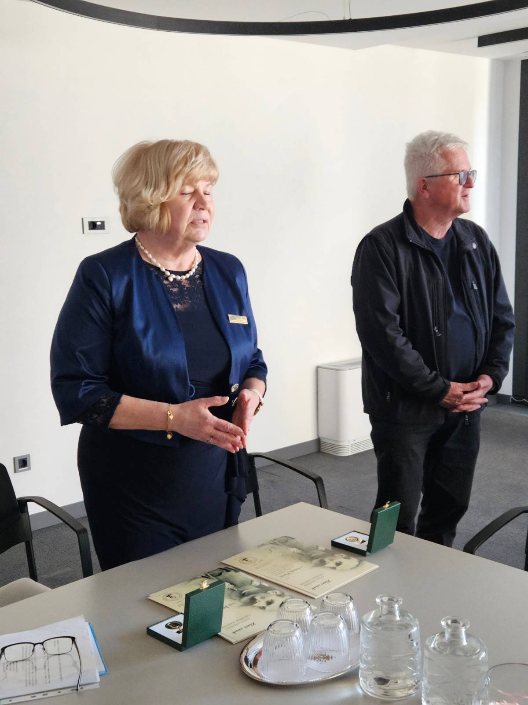
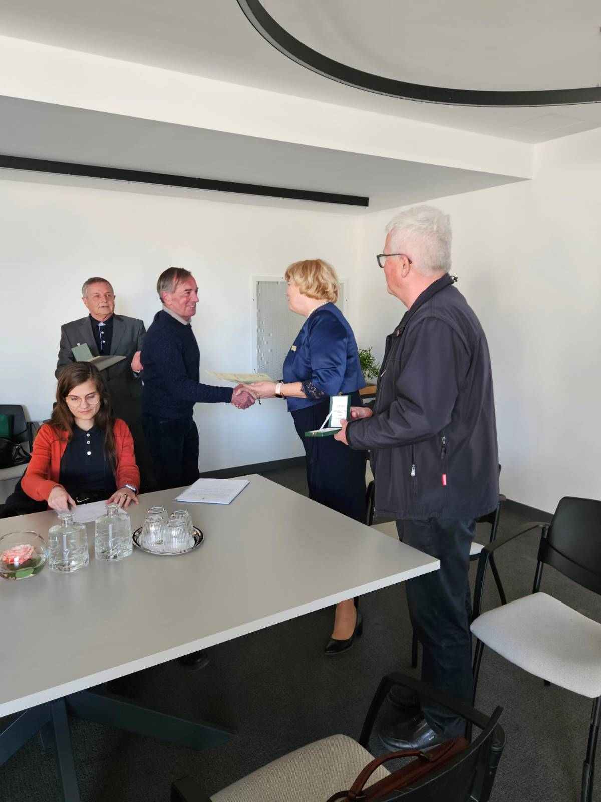
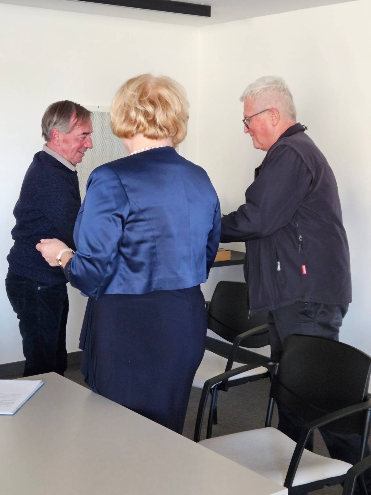
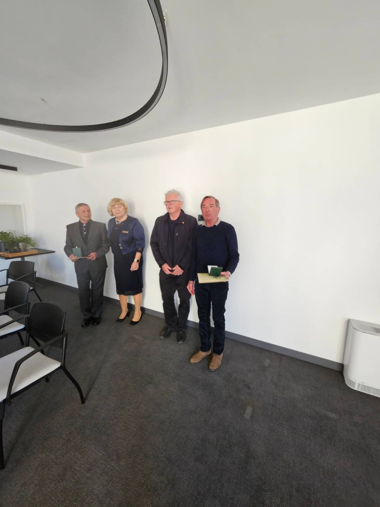
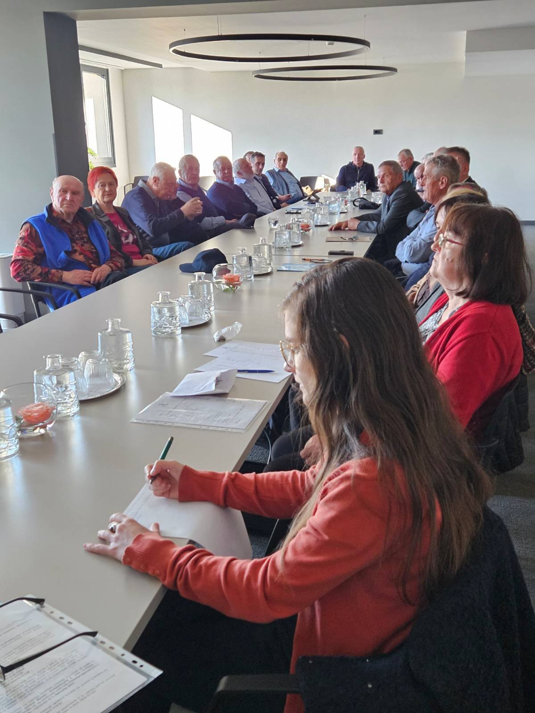
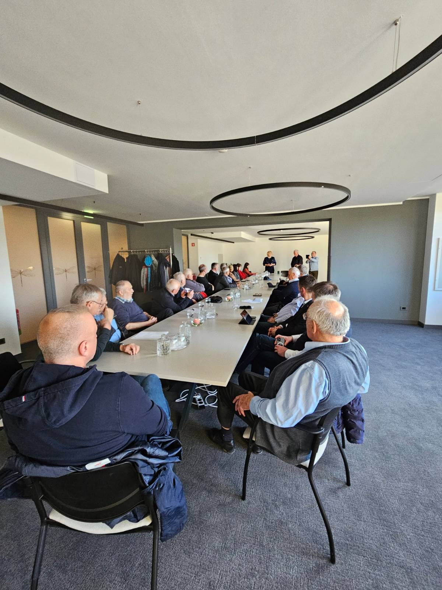
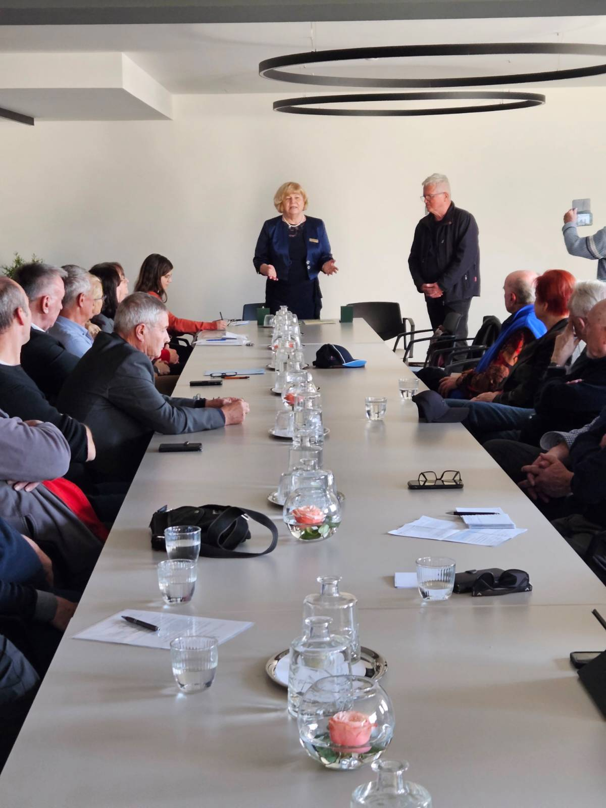

Skupščina DGRM Kranj 16. 3. 2023
Člani Društva general Rudolf Maister Kranj so se 16. 3. 2022 popoldan zbrali v Hotelu Elegans na Brdu na redni letni Skupščini.
Skupščino je začel predsednik društva Roman Nahtigal. Najprej je pozdravil gosta, predsednico Zveze društev general Maister Lučko Lazarev Šerbec in generalnega sekretarja Rudolfa Pfajfarja.

Člane je obvestil, da je komisija za vodenje postopkov za podeljevanje priznanj ZDGM v decembru 2022 v skladu s Pravilnikom o postopkih in kriterijih za podeljevanje priznanj Zveze društev general Maister objavila Razpis za podelitev priznanj veze društev general Maister v letu 2023. V prvem letu podeljevanja priznanj ZDGM so lahko društva predlagala 5% od števila članov društva, kar je za naše društvo pomenilo, da smo lahko predlagali dva predloga.
Po tem uvodu predsednika društva je predsednica ZDGM pozdravila člane društva in jih seznanila z namenom podeljevanja priznanj. Pohvalila je delo in razvoj našega društva v zadnjih letih.

Upravni odbor društva je januarja 2023 ZDGM predlagal, da Zlati znak ZDGM iz našega društva prejmeta dr. Iztok Purič, ki je na pobudo predsednika ZDGM Milana Lorenčiča v letu 2010 zagotovil vse potrebne pogoje za ustanovitev DGRM Kranj in je od ustanovitve že četrti mandat tudi podpredsednik tega društva ter mag. Janez Tavčar, ki je bil od ustanovitve društva v letu 2010 do leta 2022 tri mandate predsednik društva, v tem mandatu pa je predsednik nadzornega odbora društva.
Zlata znaka z listino sta pred formalnim začetkom Skupščine dr. Iztoku Puriču in mag. Janezu Tavčarju izročila predsednica ZDGM Lučko Lazarev Šerbec in generalni sekretar Rudolf Pfajfar.


Za prejeto priznanje se je ZDGM s kratkim nagovorom zahvalil mag. Janez Tavčar.

Po podelitvi priznanj je predsednik društva predlagal, da Skupščina nadaljuje z delom po dnevnem redu, ki so ga člani prejeli z vabilom in gradivom.
Skupščina je na njegov predlog izvolila delovno predsedstvo v sestavi dr. Iztok Purič, delovni predsednik ter Nada Bogataj Kržan in Janez Tavčar, člana, za zapisnikarico Mašo Nahtigal, za overitelja zapisnika Aljošo Drobniča in Antona Stritiha ter za ugotovitev sklepčnosti po podpisih na listo prisotnosti Alojzijo Škerjanec.
Delovni predsednik je člane društva seznanil, da so med Covidom in po njem umrli naslednji člani našega društva - prof. dr. Srdjan Bavdek, Bojan Podbevšek, Franc Benedik in Nada Mihajlovič. Člani društva so spomin nanje počastili z minuto molka.
Delovni predsednik se je nato zahvalil za zaupanje, pozdravil vse prisotne in prebral z vabilom predlagani dnevni red, ki so ga člani soglasno sprejeli. Iz liste prisotnosti, je blagajničarka poročala, da je na Skupščini prisotnih 29 članov, zato je bila Skupščina sklepčna, ker ji je prisostvovalo več kot 25% članov od skupaj 44.

Predsednik društva je nato predstavil glavne realizirane naloge v preteklem letu.
Ocenil je, so bile vse naloge iz programa dela uspešno realizirane, namesto predavanja članom pa je bila organizirana celodnevna strokovna ekskurzija društva v Tržič, na Ljubelj in v Borovlje.
Število članov v društvu se je po lanski Skupščini povečalo za 16 ali za 65%.
Blagajničarka je podala poročilo o prihodkih in odhodkih v letu 2022 ter podatke o bilanci stanja na dan 31. 12. 2022.
Predsednik nadzornega odbora je poročal, da Nadzorni odbor ugotavlja:
- da je finančno poslovanje društva v skladu s SRS, zakonito in poslovno smotrno,
- da je točno poročanje blagajnika v predlogu poročila o finančnem poslovanju, o odhodkih in prihodkih ter o stanju in o rezultatih poslovanja,
- da je predlog finančnega načrta za leto 2023 zasnovan korektno in realno v danih pogojih in
- da pri nadzoru poslovanja društva ni ugotovil nepravilnosti.
Poročilo o delu, finančno poročilo in poročilo o bilanci stanja na dan 31. 12. 12022 in poročilo Nadzornega odbora so člani društva soglasno sprejeli.

Predsednik društva je nato na kratko predstavil predlog programa dela za leto 2023, ki ga je obravnaval in potrdil Upravni odbor na januarski seji. Omenil je le nove naloge, ki bodo zahtevale sodelovanje širšega kroga članov društva. Posebno skrb bi morali po njegovem mnenju vsi člani društva tudi v bodoče namenjati predvsem pridobivanju novih članov. Potem je predstavil finančni načrt, ki ga društvo doslej ni sprejemalo na Skupščini. Poudaril je, da se z njim na prihodkovni in na odhodkovni strani pokriva vse načrtovane aktivnosti v programu dela za letošnje leto.
Člani niso imeli pripomb ali vprašanj na oba predstavljena programska dokumenta, zato ju je Skupščina soglasno sprejela.
Pri zadnji točki Skupščine, predlogi in vprašanja, je Drago Štefe menil, da bi morali bolj skrbeti za vsa spominska obeležja in za spomine na ljudi, ki so dali celo svoja življenja ob posameznih prelomnih dogodkih naše zgodovine. Po njegovem niso zaslužni le tisti, ki so zapisani na posameznih spominskih ploščah in na seznamih, ampak tudi mnogi, ki so bili prezrti in nikoli nikjer zapisani.

Predsednica ZDGM Lučka Lazarev Šerbec in generalni sekretar Rudolf Pfajfar sta v svojih razpravah poudarila pomembnost delovanja društev generala Maistra, ZDGM ter veteranskih organizacij in njihovih zvez med mladimi in v javnosti.
Jožeta Kavčiča je zanimalo, kakšno je sodelovanje ZDGM s Koroško.
Odgovoril mu je generalni sekretar ZDGM Rudolf Pfajfar, ki je v obširnem odgovoru med drugim poudaril, da je sodelovanje s Koroško že dalj časa zelo dobro z obeh strani.
Ker ni bilo drugih predlogov in vprašanj, je delovni predsednik zaključil zasedanje Skupščine in vse sodelujoče povabil v restavracijski del hotela na pogovore in druženje ob obari in ajdovih žgancih ter ob kozarčku vina.
DOKUMENTI:
- Poročilo o delu za leto 2022 (pdf)
- Poročilo o finančnem poslovanju (pdf)
- Program dela DGRM Kranj za leto 2023 (pdf)
- Finančni načrt za leto 2023 (pdf)